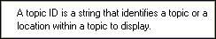
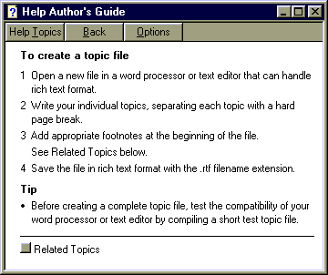
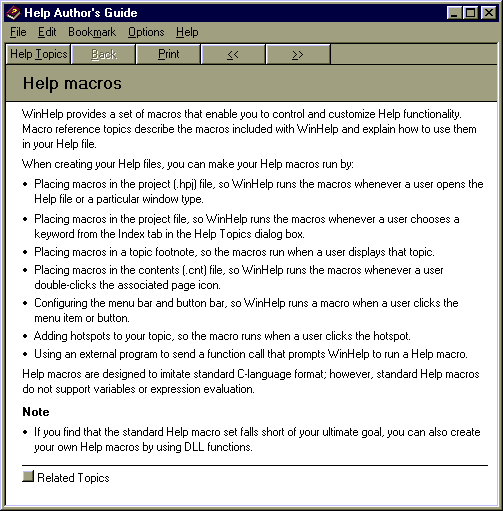

WinHelp window types
When using the WinHelp command, specify one of the following WinHelp window types. Specify a pop-up window in the Command parameter:
Pop-up WinHelp window

Secondary WinHelp window

Primary WinHelp window (main)

Notes
-
The specific window attributes, such as size, position, and background color, are based on the definitions in the
[WINDOWS] section of the specified WinHelp project (.hpj) file.
-
If you do not specify a window type or a window name, the main window is used.